Prefab workflow
In this section, we will learn how to use LGUIPrefab to reuse our UI content.
1. Prepare a LGUI ScreenSpaceUI.
Follow the HelloWorld section to create a base ScreenSpaceUI.
2. Create a button as prefab source.
Select "ScreenSpaceUIRoot" actor, right click on the down arrow button, and choose "Create UI Element"->"Button": 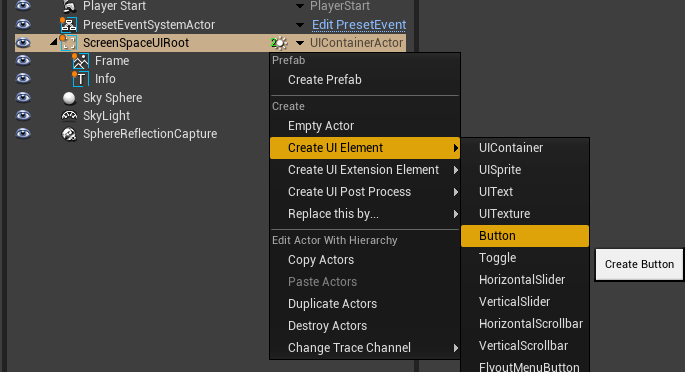
Rename the button actor to "MyPrefabButton", set "AnchorOffsetY" to -100, "Color" to green: 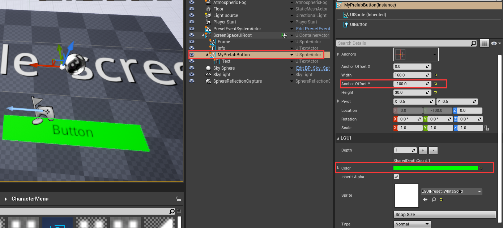
3. Create prefab.
Select "MyPrefabButton" actor, right click on the down arrow button, and choose "Create Prefab": 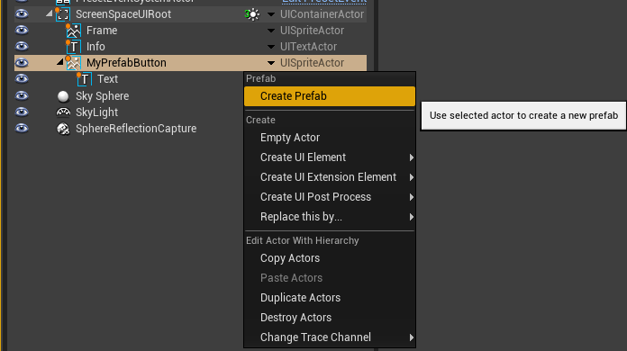
Now a save file window will showup: 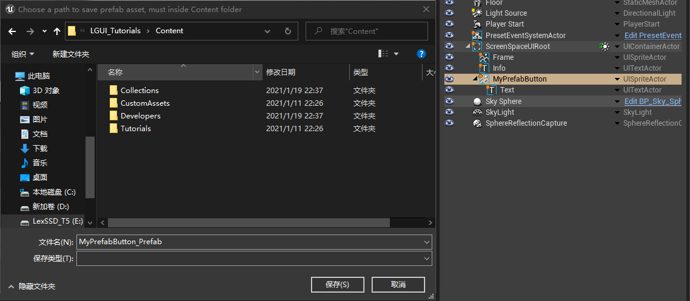
Click "Save" or "保存" button, then a prefab asset will appear in "Content" folder: 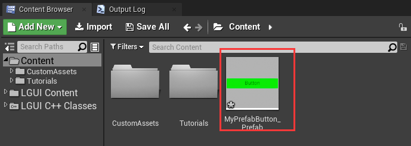
And notice the "MyPrefabButton" actor in the "World Outliner", the down arrow button icon become a prefab icon, and a temp prefab actor will appear in "--LGUIPrefabActor--" folder: 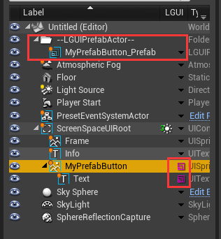
Select "MyPrefabButton" actor, right click on the prefab icon and choose "Destroy Actors": 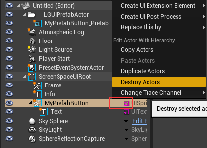
Notice the "MyPrefabButton" actor and it's children are all destroyed, and the "--LGUIPrefabActor--" folder become empty: 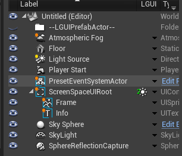
4. Reuse prefab in editor.
Select "ScreenSpaceUIRoot" actor, drag "MyPrefabButton_Prefab" asset and drop to anywhre on viewport: 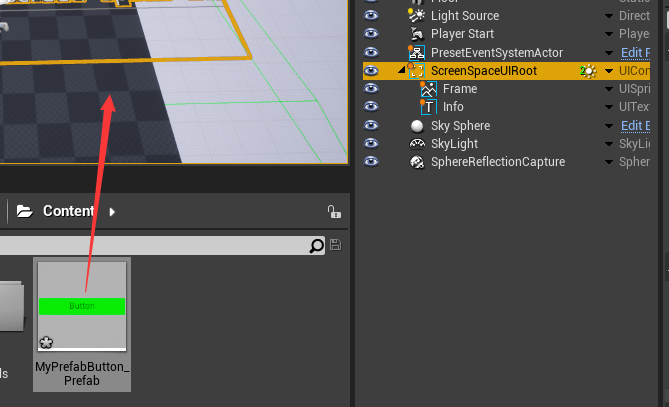
See a "MyPrefabButton" actor is created in viewport and world outliner: 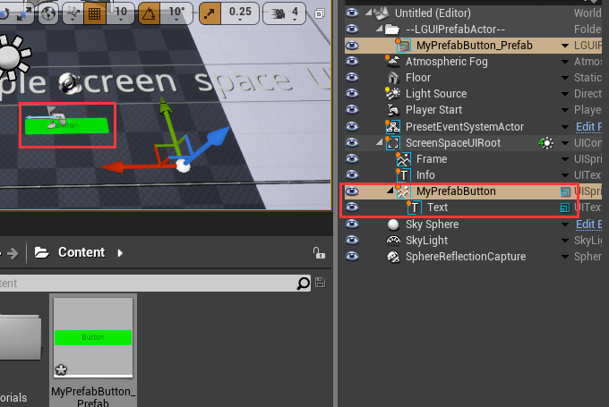
Select "Info" actor, drag "MyPrefabButton_Prefab" asset and drop to anywhre on viewport, then a new "MyPrefabButton" will be created (you may need to move it off to see in viewport): 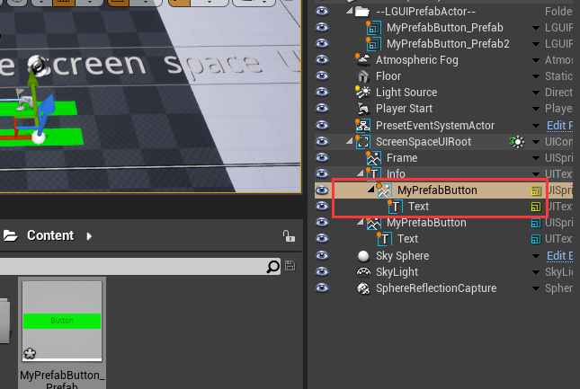
Notice different prefab have different color on prefab icon: 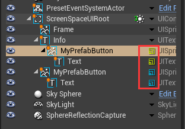
Select both "MyPrefabButton" actor by hold "Ctrl" key and click it: 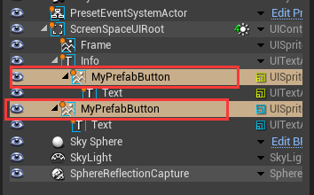
Choose "LGUI Tools"->"Destroy Actors" to destroy both actors and all it's children: 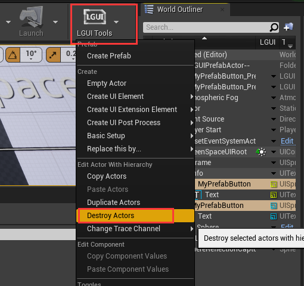
5. Reuse prefab in runtime.
Right click in empty area of "Content" and choose "Blueprints"->"BlueprintClass": 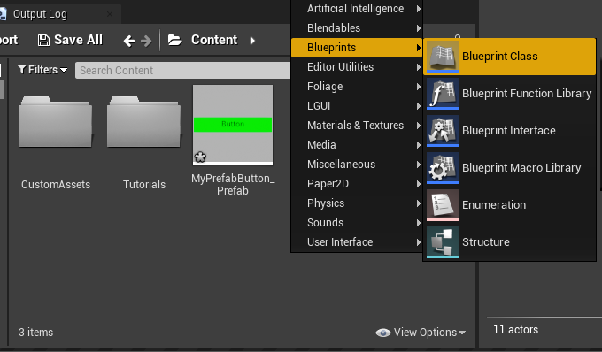
Select "Actor Component": 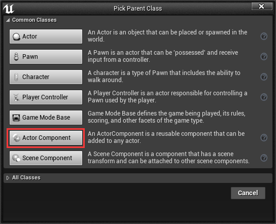
Name the created ActorComponent class to "PrefabLoader": 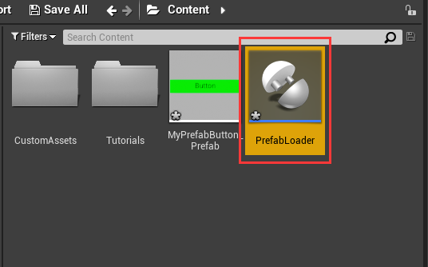
Double click "PrefabLoader" to open blueprint editor: 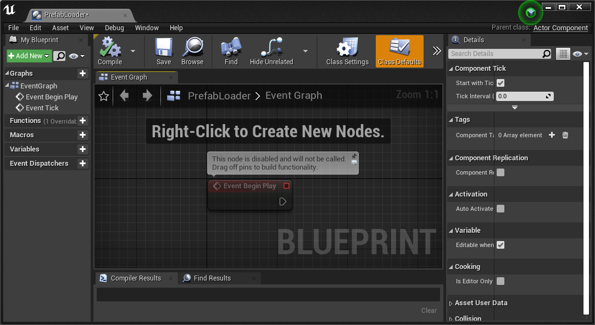
Drag out "Event Begin Play" and add a "Load Prefab" node: 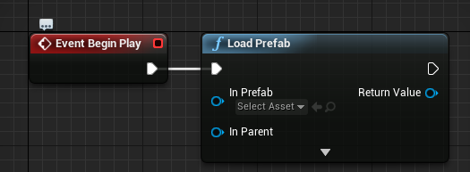
Drag "MyPrefabButton_Prefab" to "In Prefab" of "Load Prefab" node: 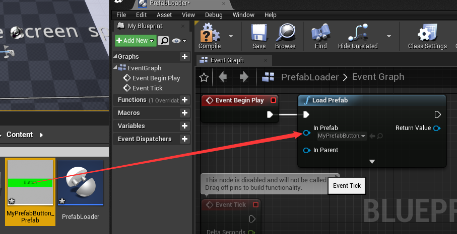
Connect "Get Owner" and "Root Component" node to "In Parent" of "Load Prefab" node: 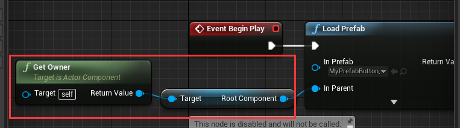
Click "Compile" and then close the blueprint editor: 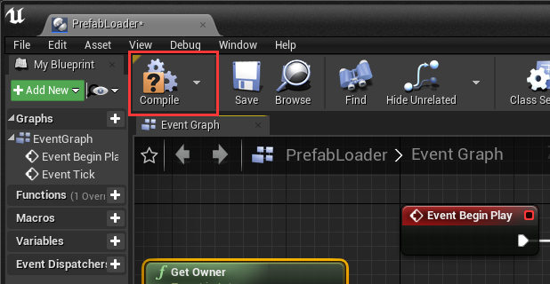
Select "ScreenSpaceUIRoot" actor in "World Outliner", and drag "PrefabLoader" to it's component stack: 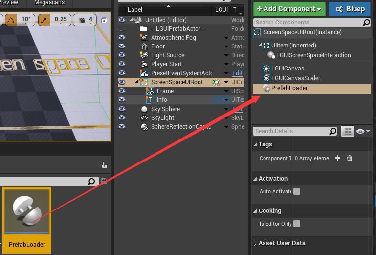
Hit play, notice a prefab button is created: 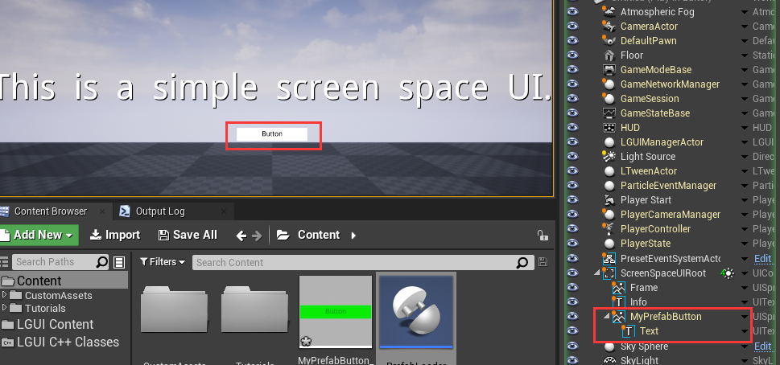
Notice the button's color become white, because it is override by UIButton component, now let's modify the prefab to fix it.
6. Modify prefab.
Exit play mode by click stop button. Select "ScreenSpaceUIRoot" actor, drag "MyPrefabButton_Prefab" to viewport, so that will create the prefab instance. 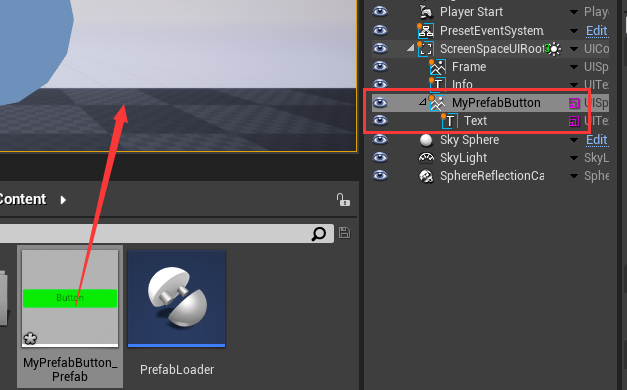
Select "MyPrefabButton" actor, select "UIButton" component. UIButton use "ColorTint" on "Transition" property, it will override the TransitionActor's color with "Normal Color": 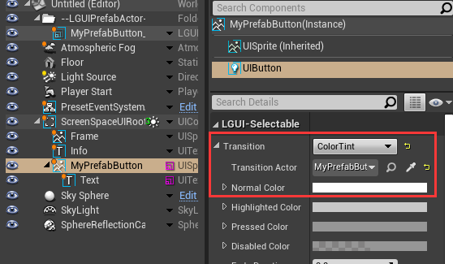
Change the "Normal Color" to red, notice the button in viewport become red too: 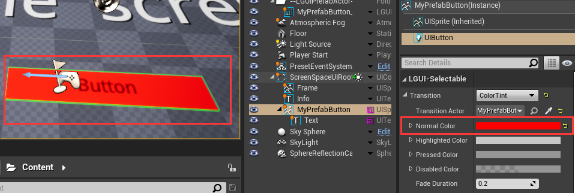
Right click on the prefab icon, and choose "Apply Prefab", so that the prefab asset is modified: 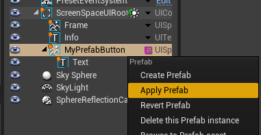
Right click on the prefab icon, and choose "Delete This Prefab Instance", that will delete the prefab instance: 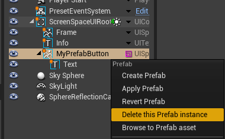
Now hit play, see the loaded button have a red color: 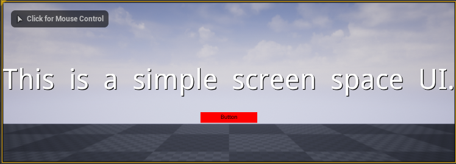